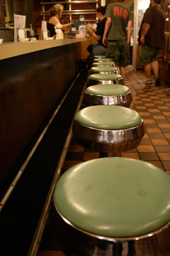

Schedule & Info
FRIDAY.
ARRIVE.
Between 6:30 and 7:30 p.m. [EST].GO.
To Trinity Church in Broadripple. 6151 Central Avenue, Indianapolis, IN 46220-1838BRING.
Your overnight stuff IF YOU ARE SLEEPING AT ONE OF THE CHURCHES. [If you are sleeping at your house don't worry about it.]REGISTER.
At the doors on the backside of the building. You will be greeted by an EC staff, dump your stuff in the proper Grid pile, and check in with the computer people.MAIN SESSION
Begins at 8:00 p.m. [Welcome, Words by Joe Boyd, Panel Discussion]SMALL GROUPS
You will meet with your grid, figure out carpooling, establish deep and meaningful friendships or at least learn some names.LEAVE.
You will grab your stuff, find a ride to your Grid location and get settled. There will be directions given out in your grid meeting.SLEEP.
SATURDAY.
BREAKFAST.
At 8:30 free breakfast will be provided.MORNING.
At 9:00 each of the Grids will officially start with devotions/prayer/centering.TALKS & DISCUSSION
that are Grid-specific.ENGAGING GLOBAL CULTURE
- Exploring immigrant needs and issues.
- Exploring the challenges of sharing life and Jesus with Muslims.
- Speakers - Crescent Project & Exodus
ENGAGING URBAN CULTURE
- Interpreting the cause and effects of poverty, racism, and other issues facing our cities and creative approaches to those problems.
- Speaker - Tim Streett
ENGAGING POP CULTURE
- Discerning the subtleties of how the arts, media, and public policy shape our world view.
- Rethinking beauty, goodness, and truth.
- Speakers - Joe Boyd & Mike Kaufmann
LUNCH.
[on your dime in small groups - continued discussion of the morning talks]AFTERNOON.
The afternoon will be spent in response to the morning teaching and discussion... Each grid will have various ways to respond, including...- Hands-On Response
- Work Projects - Service opportunities partnering with various organizations.
- Creative Response
- Using art/photo/journalism to capture and retell stories and provoke questions.
- Mobilization
- Designing ways to meet specific needs & outreach drawing on the creativity, skills, & gifts of the collective group
DEBRIEF / DINNER.
[on your dime again in small groups from the Grid.]WORSHIP & WRAP-UP.
Begins at 7:30 at Trinity. An integration and participation from all 3 Grids and discussion about 'what's next? sustaining the experience of the last 24 hours.'GO OUT.
The conference will be done between 9:00 and 9:30.BRING.
Bible, pen, bedding, air mattress if you want one, money for food, a laptop if you have one, open mind.MAPS.
Maps to your grids, restaurants, points of interest will be provided in your small groups on Friday night.CARPOOL.
Once you are at the conference, if you are willing to either drive or chip in a buck or two for gas that would be great. We will be carpooling all over.QUESTIONS?
rschrumpf@pcch.org
